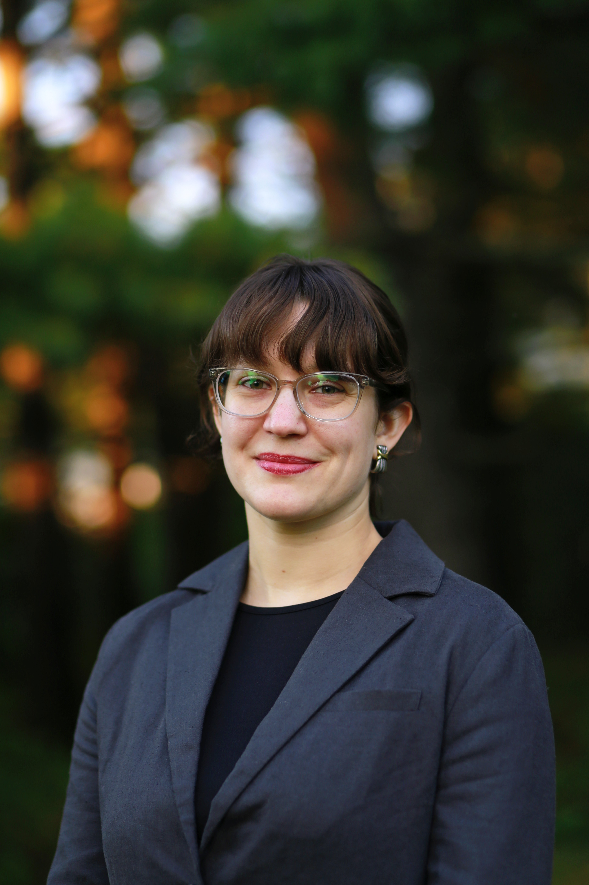

I am a fifth-year PhD candidate in the Department of Cognitive and Psychological Sciences at Brown University, working with William Warren in the Virtual Environment and Navigation Lab (VENLab). I received a Master of Science in Cognitive Neuroscience from CUNY The Graduate Center in 2022 under the research advisement of Tony Ro. I have taught as an adjunct instructor at Roger Williams University (Environmental Design Research; 2026) and Lehman College (Physiological Psychology; 2020-2022). Before graduate school, I received a Bachelor of Architecture from Cooper Union (2016).
I am interested in the internal representation of space in humans and animals, and the potential of embodied behavior to reveal some of its principles. In particular, I study how people navigate naturalistic maze and open-field environments, analyzing motion-tracking trajectories to characterize latent decision-making processes related to wayfinding, search, and exploration. I am especially excited by the emergence of spontaneous behavioral patterns that are not directly prompted by the task, and use modeling and agent simulations to look for convergent solutions. During my PhD, I have developed several immersive virtual reality paradigms to probe these questions.
I am originally from Ithaca, NY, and enjoy exploring backroads on my bike, watching obscure films, and a good long yoga inversion.
I am seeking postdoc opportunities in neuroscience and psychology, particularly in labs that combine behavioral modelling with neural recording.